Upcoming Events
-
Makrokosmos Project 7: Fanfare for the Uncommon Woman
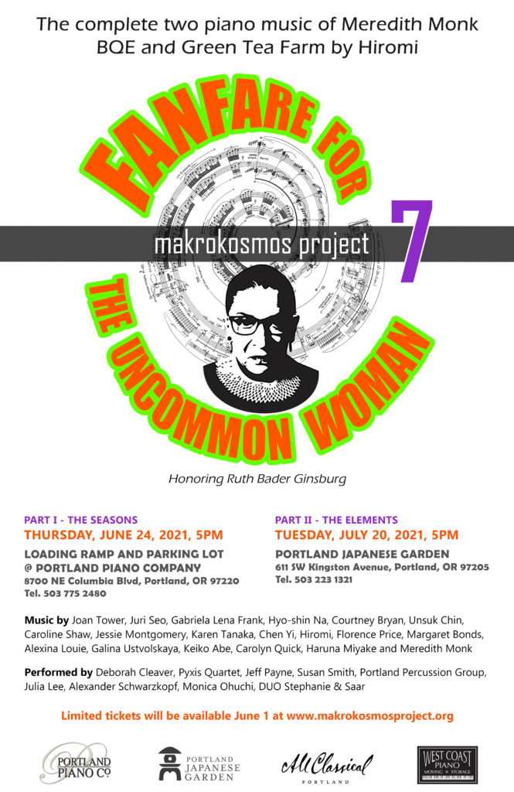The Portland Percussion Group is proud to team up with the Pyxis Quartet, Deborah Cleaver, Jeff Payne, Susan Smith, Julia Lee, Alexander Schwarzkopf, Monica Ohuchi, and DUO Stephanie & Saar to honor the life and accomplishments of Ruth Bader Ginsburg.
Featuring music by Joan Tower, Juri Seo, Gabriela Lena Frank, Hyo-shin Na, Courtney Bryan, Unsuk Chin, Caroline Shaw, Jessie Montgomery, Karen Tanaka, Chen Yi, Hiromi, Florence Price, Margaret Bonds, Alexina Louie, Galina Ustvolskaya, Keiko Abe, Carolyn Quick, Haruna Miyake and Meredith Monk
PART I – THE SEASONS
THURSDAY, JUNE 24, 2021, 5PM
LOADING RAMP AND PARKING LOT @ PORTLAND PIANO COMPANY
8700 NE Columbia Blvd, Portland, OR 97220 Tel. 503 775 2480
PART II – THE ELEMENTS
TUESDAY, JULY 20, 2021, 5PM
PORTLAND JAPANESE GARDEN
611 SW Kingston Avenue, Portland, OR 97205 Tel. 503 223 1321
Past Events
-
Tarptautinis Aktualiosios Muzikos Festivalis GAIDA
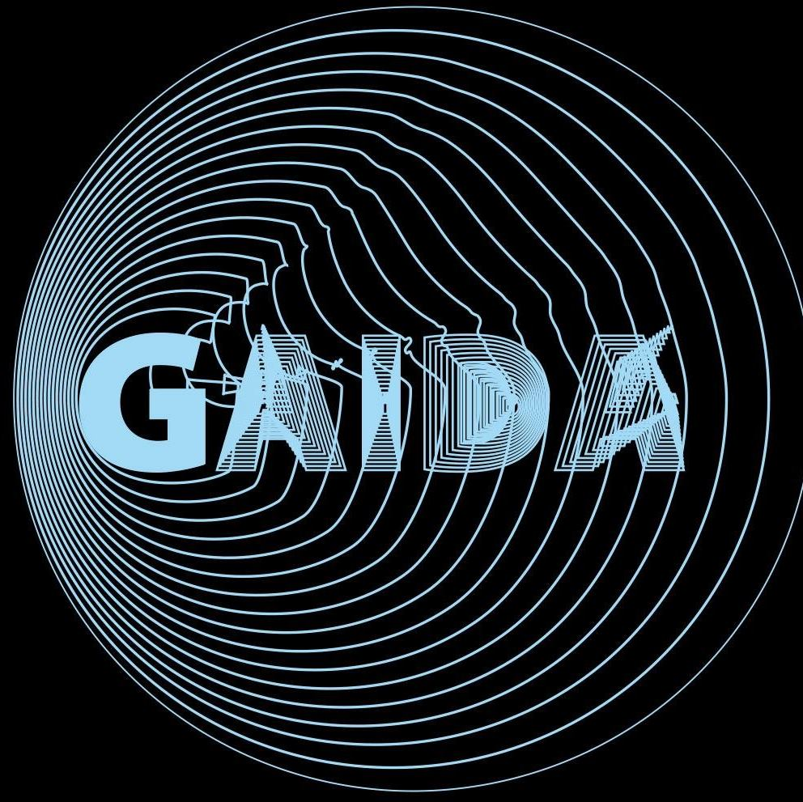The Portland Percussion Group was invited to share two programs at the distiguished GAIDA Music Festival in Vilnius, Lithuania in October, 2020. The first of which consisted of works by Douglas Hertz, Steven Snowden, Paul Lansky, Connor Shafran, and Philip Glass. The second featured a performance of “Drumming” by Steve Reich, along side the renowned Colin Currie Quartet.
The GAIDA Festival, in Vilnius, has been the largest and the most prominent festival of modern music in Lithuania and all Baltic countries since its genesis in 1991. GAIDA is open to music and innovative art of all different traditions and all geographical sources. It reflects and presents a broad sweep of the latest creative processes and newest musical tendencies in Europe and the world. GAIDA introduces Vilnius audiences to the finest achievements of today’s contemporary music – symphonic, instrumental, electronic & digital art; the most famous musicians are invited to the festival; the most impressive works of nowadays are performed. GAIDA presents creations from many different genres, from orchestras’ and ensembles’ concerts to electronic music, innovative multimedia projects, music theatre, sound installations and club events.
All of us at the Portland Percussion Group are so thankful for the support of the Mid Atlantic Arts Foundation and USArtists International. Without the help of this amazing granting organization, our trip to Lithuania would not have been possible! USAI provides travel funding to artists across all disciplines throughout the United States for performances abroad, and we were honored to have their support for this trip!
Photo Credit: Dainiaus Labučio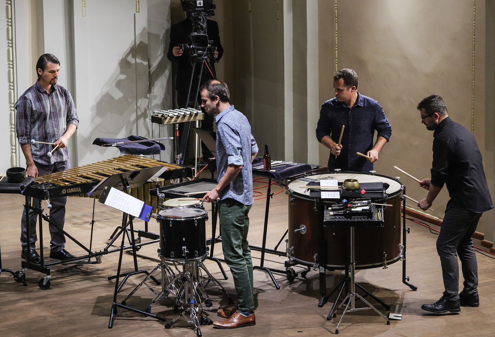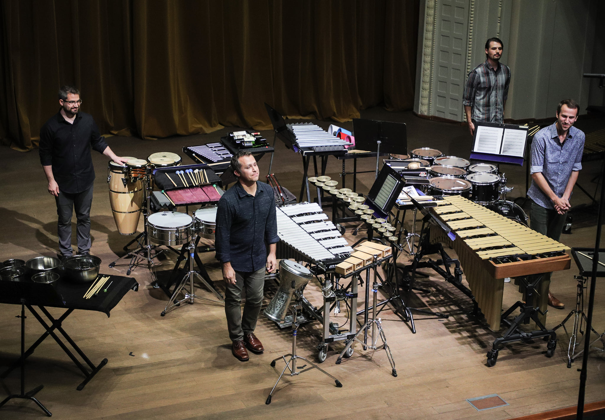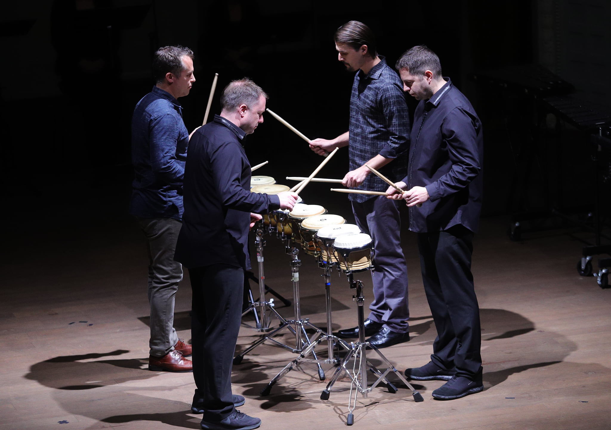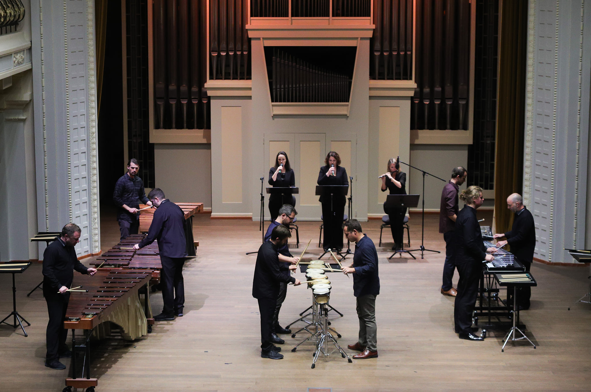 -
Petite Corvette Rouge
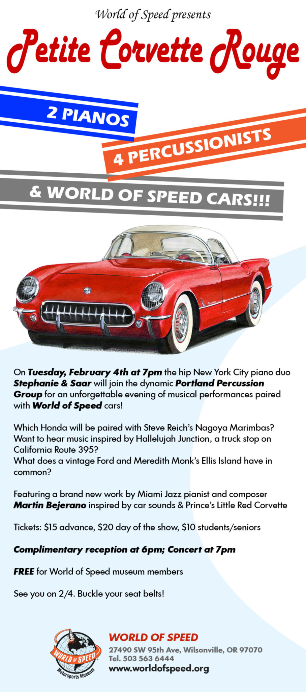The Portland Percussion Group , once again teamed up with two of our favorite collaborators, New York City piano duo Stephanie & Saar. This program took place at the World of Speed car museum in Wilsonville, OR. Each piece of music was paired with a vehicle to create a fun and exciting envrinment for new-music enthusiasts and new-comers alike. The program was highlighted by a brand new work by Miami Jazz pianist and composer Martin Bejerano inspired by car sounds & Prince’s Little Red Corvette.
Photo Credit: Andrew Wallner/Story to Spectacle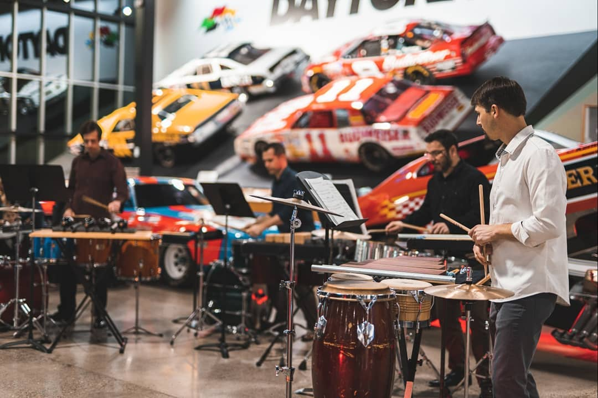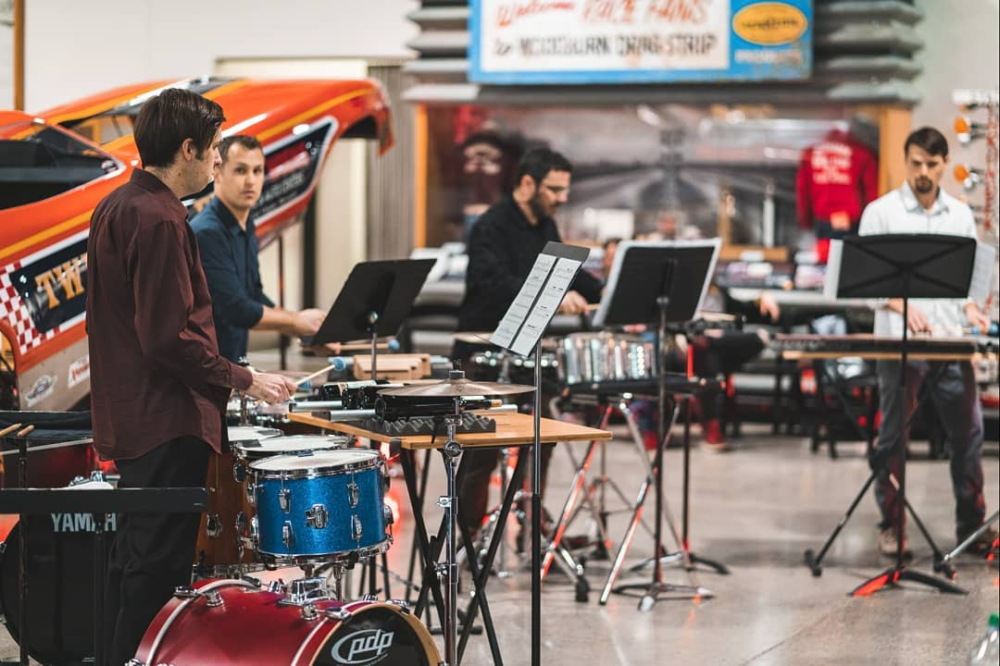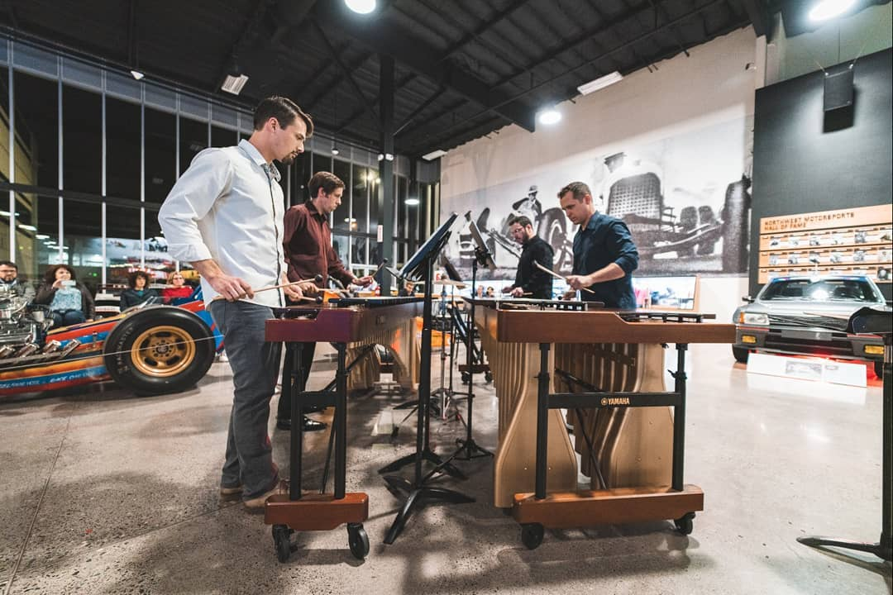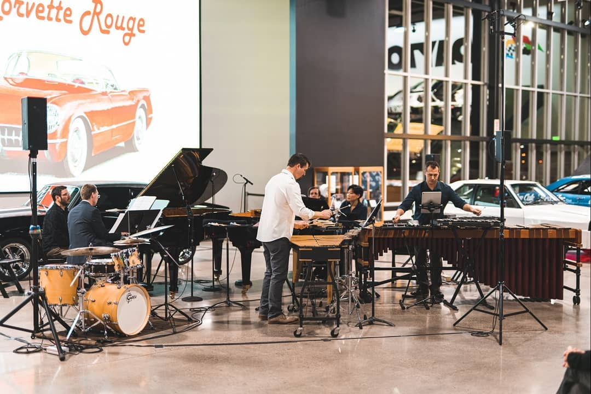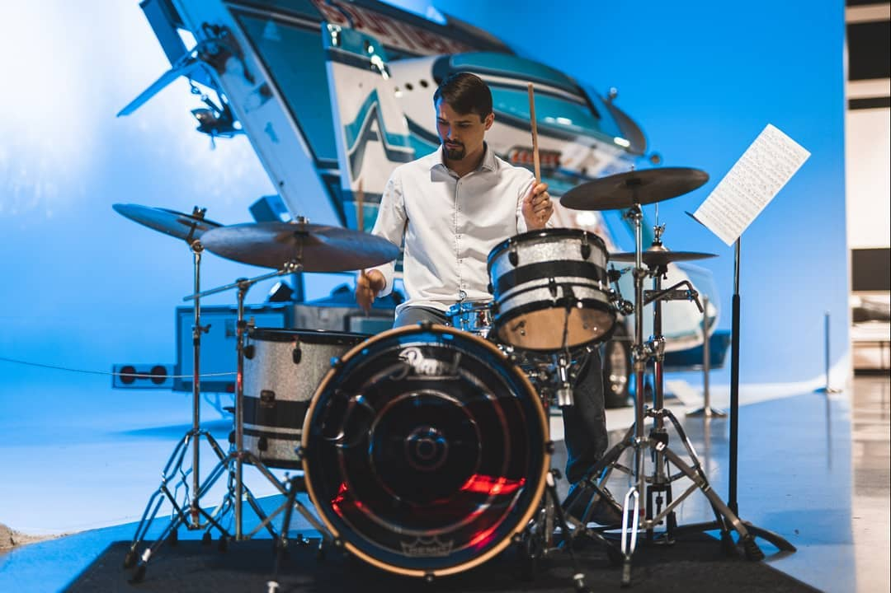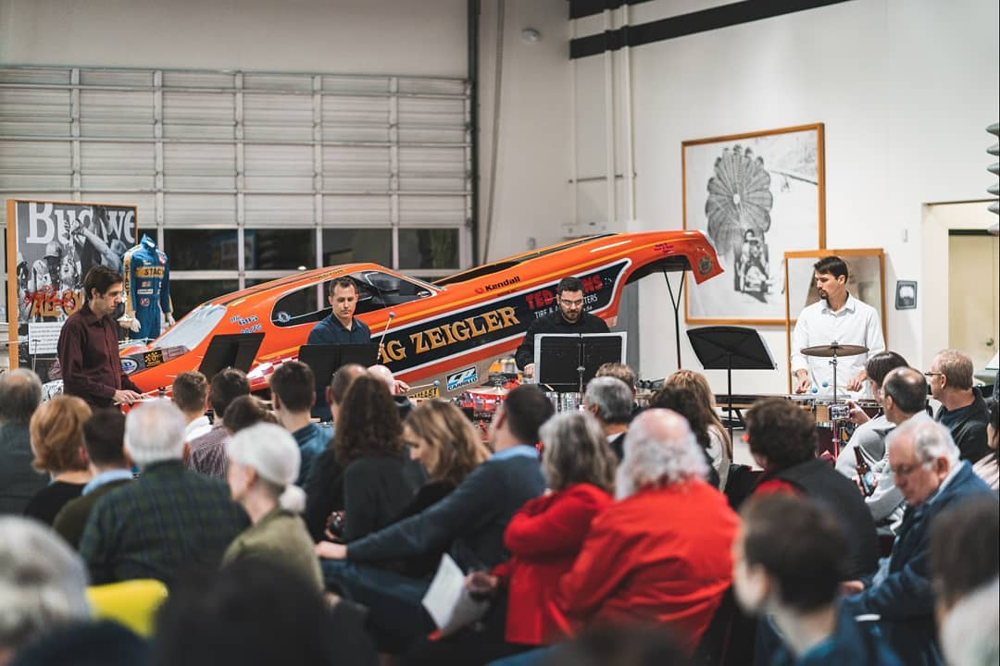